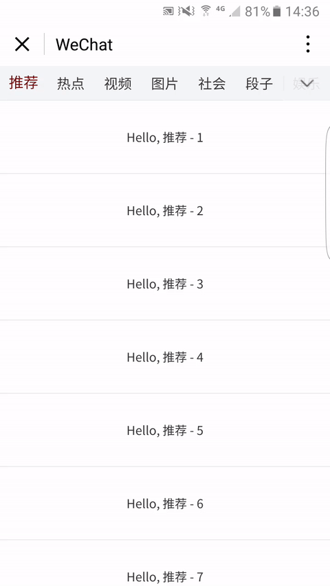
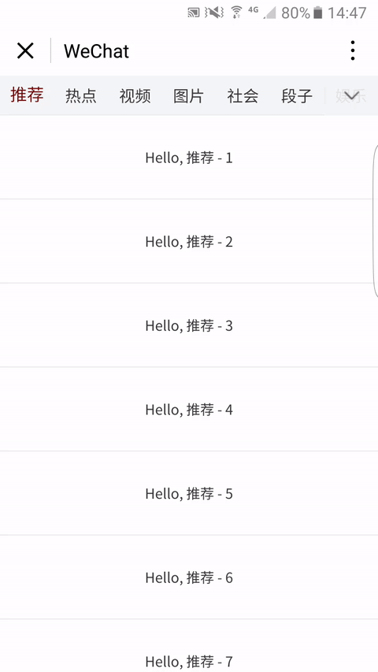

今日头条App的Topbar是一个典型的频道管理和切换组件，自己前段时间研究了一番，在微信小程序上也实现了类似的效果。
我们先看具体效果好了 ↓↓↓


这个项目(wx-topbar)已经放在GitHub上了——点此前往，欢迎学习交流。
接下来，简要说一下实现思路。
先看视图层，Topbar横向滚动对应的WXML代码如下：
<scroll-view class="navbar" scroll-x="true" scroll-left="{{scrollNavbarLeft}}"> |
scroll-view负责Topbar中各个频道的呈现，所有频道的相关数据都存储在navbarArray这个对象数组里，而数组navbarShowIndexArray里存储了要显示频道在数组navbarArray中的索引。
不难猜测，频道是否选中高亮，与数组navbarArray有关；频道是否显示，与数组navbarShowIndexArray有关。
点击某个频道名称，就会触发对应频道的切换操作。
view.navbar-arrow-down对应的是右上角的向下箭头，可采用fixed定位类型，点击后弹出管理频道的Modal.
<view class="channel-setting-modal {{ channelSettingModalShow }}" hidden="{{ channelSettingModalHide }}"> |
在这个管理频道的Modal里，通过改变数组navbarShowIndexArray来控制频道是否显示和显示顺序，同时，需要另外一个数组navbarHideIndexArray来存储隐藏的频道。
Modal显示的时候，Topbar需要被另一个写有“频道设置”字样的Bar覆盖。
<view class="channel-setting {{ channelSettingShow }}"> |
然后，我们来看逻辑层的实现。初始化的部分data如下：
data: { |
navbar-item-active是一个可使频道高亮的Class，navbarShowIndexArray初始化的结果是一个0到11的数组，刚好是数组navbarArray的所有元素的索引。显然，初始化的结果是所有频道都将显示。
为了实现频道个性化配置的保存，navbarShowIndexArray还需要通过小程序的数据缓存API储存起来。
storeNavbarShowIndexArray: function() { |
切换频道的函数如下：
switchChannel: function(targetChannelIndex) { |
这样，频道的管理和简单切换我们就实现了。
但是，到此为止，频道的切换只能通过点击对应Topbar中频道那一小块区域来实现，要是在正文区域左滑和右滑也能切换频道就好了。
一个容易想到的思路是，在正文区域绑定touch事件，通过坐标判断滑动方向，然后使Topbar中当前频道的上一个或下一个频道高亮，同时，控制Topbar横向滚动合适的偏移长度，以确保切换后的频道能出现在视图区域。
onTouchstartArticles: function(e) { |
更多的技术细节，请移步GitHub——点此前往。